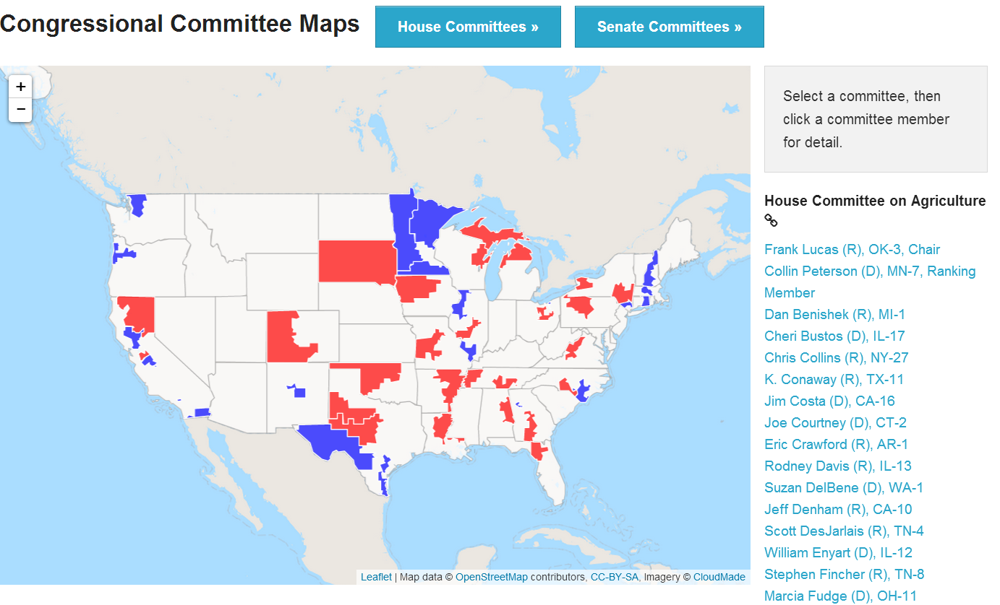
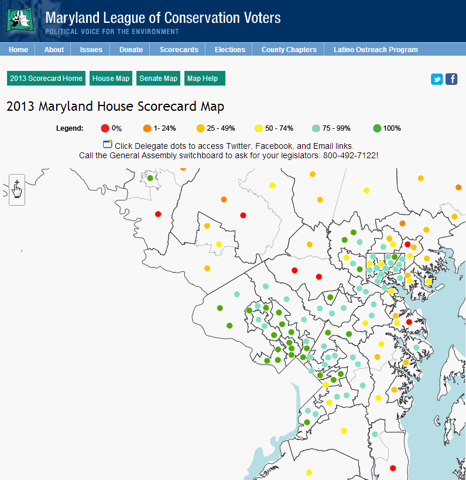
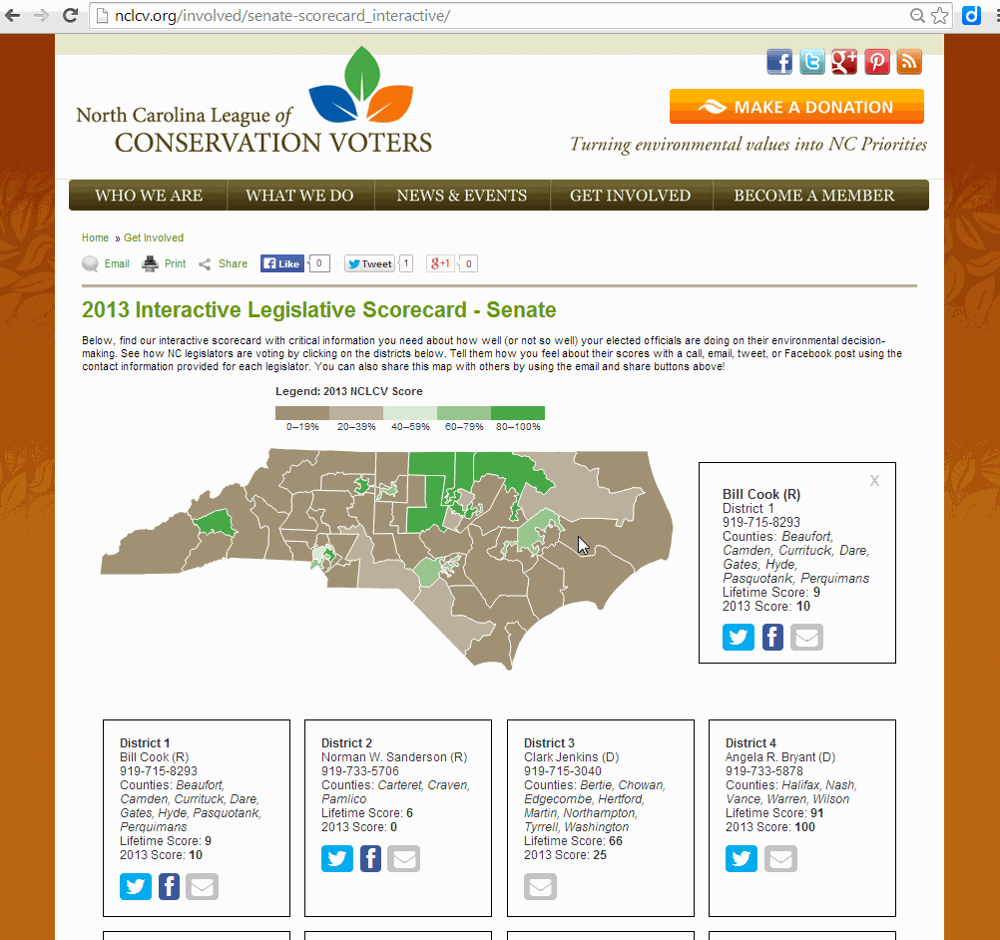

Margie Roswell / ScorecardMaps.com /FarmBillPrimer.org / @FarmBillPrimer
About this Talk...
- Look at various scorecard maps and data visualizations
- Your role
- A few slides about the technology
- Hall of mini-bloopers
- Questions after all panelists have presented.
Food Policy Scorecard (under development)

CommitteeMaps.org
Your Role
- Publish a Google Spreadsheet (or share an Excel file)
- Legislator Dots? or Boundaries?
- Choose colors, and decide where your scores break in the legend (i.e., are 0 and 100 their own colors?)
- Optional: How wide is your website? Perhaps contact a site developer to make it wider, or remove a sidebar.
- Optional: Do you want to set up default tweets for each legislator? If so, add them to the spreadsheet.
Publish a Google Spreadsheet
(or share an Excel file)

Legislator Dots or Boundaries?


Choose a color scheme


Website width

Maryland LCV Scorecard Map Tweets
North Carolina LCV Scorecard Map Twitter Links
Tweet encoding
We know you can do better #AddieEckardt for scoring 25% on the @MDLCV scorecard! #MDLCVScore http://bit.ly/mdlcvscorecardWe+know+you+can+do+better+%23AddieEckardt+for+scoring+25%25+on+the+%40MDLCV+scorecard%21+%23MDLCVScore&url=http://bit.ly/mdlcvscorecardKey Technology Breakthroughs

- Replicate the look and feel of a Geographic Information System in JavaScript. Boundaries, points, thematic colors, zoom, pan, and info boxes.
- Populate a map and web page using Google Sheets. (With the Google spreadsheet as a data source, we can also deliver a table, and not just a map.)
- Color a table or array of info boxes by LCV score.
(Not yet implemented on a live site) - Consume the Congress API developed by the Sunlight Foundation (on CommitteeMaps.org)
Two different versions of Google Sheets
https://support.google.com/drive/answer/3541068?hl=enStarting in March and April 2014, Google Sheets users creating new spreadsheets will be automatically directed to the new Sheets. All previously created spreadsheets will remain in the older version of Sheets for now. If you need to create a spreadsheet using the old Sheets, you can do so at g.co/oldsheets.
Names of Technologies
- Spreadsheets (Google or Excel)
- HTML
- CSS
- TileMill
- GIS (Shapefile map)
- Javascript (GeoJSON map)
- Leaflet
- D3
- Tableau Public
Let's build this!Find key constituents from your website visitors

Blooper hall of "Could be improved"
 ... can you find it? Are there links? (How many clicks does it take? ) Internally accessible? Is it readable. Is it legible. Is it accessible? Is it disability-accessible?
... can you find it? Are there links? (How many clicks does it take? ) Internally accessible? Is it readable. Is it legible. Is it accessible? Is it disability-accessible?